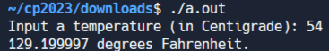

ex1 <<
Previous Next >> 期末總結
練習一
1.將攝氏度轉換為華氏度
#include <stdio.h> // Include the standard input/output header file.
float temp_f; /* degrees fahrenheit */
float temp_c; /* degrees centigrade */
char line_text[50]; /* a line of input */
int main() {
printf("Input a temperature (in Centigrade): "); // Prompt the user to input a temperature in centigrade.
fgets(line_text, sizeof(line_text), stdin); // Read a line of input from the user and store it in 'line_text'.
sscanf(line_text, "%f", &temp_c); // Convert the input from 'line_text' to a float and store it in 'temp_c'.
temp_f = ((9.0 / 5.0) * temp_c) + 32.0; // Convert temperature from centigrade to fahrenheit and store it in 'temp_f'.
printf("%f degrees Fahrenheit.\n", temp_f); // Print the temperature in fahrenheit.
return(0); // Return 0 to indicate successful execution of the program.
}

2.計算矩形的周長
#include <stdio.h> // Include the standard input/output header file.
int main() {
float rec_width; /* Declare variable 'rec_width' to store the width of the rectangle */
float rec_height; /* Declare variable 'rec_height' to store the height of the rectangle */
float rec_perimeter; /* Declare variable 'rec_perimeter' to store the perimeter (to be computed) */
// Prompt the user to input the height of the rectangle.
printf("Input the height of the Rectangle : ");
scanf("%f", &rec_height); // Read the value of 'rec_height' from the user.
// Prompt the user to input the width of the rectangle.
printf("Input the width of the Rectangle : ");
scanf("%f", &rec_width); // Read the value of 'rec_width' from the user.
// Calculate the perimeter of the rectangle using the formula: perimeter = 2 * ( width + height )
rec_perimeter = 2.0 * (rec_height + rec_width);
// Print the calculated perimeter of the rectangle.
printf("Perimeter of the Rectangle is : %f\n", rec_perimeter);
return 0; // Indicate successful program execution.
}
3.將公里/小時轉換為英里/小時
#include <stdio.h> // Include the standard input/output header file.
float kmph; /* kilometers per hour */
float miph; /* miles per hour (to be computed) */
char line_text[50]; /* a line from the keyboard */
int main()
{
printf("Input kilometers per hour: "); // Prompt the user to input kilometers per hour.
fgets(line_text, sizeof(line_text), stdin); // Read a line of input from the user and store it in 'line_text'.
sscanf(line_text, "%f", &kmph); // Convert the input to a float and store it in 'kmph'.
miph = (kmph * 0.6213712); // Convert kilometers per hour to miles per hour.
printf("%f miles per hour\n", miph); // Print the result in miles per hour.
return(0); // Return 0 to indicate successful execution of the program.
}
4.計算總分鐘數
#include <stdio.h> // Include the standard input/output header file.
int hrs; /* given number of hours */
int mins; /* given number of minutes */
int tot_mins; /* total number of minutes (to be computed) */
const int MINaHOUR = 60; /* number of minutes in an hour */
char line_text[50]; /* line of input from keyboard */
int main() {
printf("Input hours: "); // Prompt the user to input hours.
fgets(line_text, sizeof(line_text), stdin); // Read a line of input from the user and store it in 'line_text'.
sscanf(line_text, "%d", &hrs); // Convert the input to an integer and store it in 'hrs'.
printf("Input minutes: "); // Prompt the user to input minutes.
fgets(line_text, sizeof(line_text), stdin); // Read a line of input from the user and store it in 'line_text'.
sscanf(line_text, "%d", &mins); // Convert the input to an integer and store it in 'mins'.
tot_mins = mins + (hrs * MINaHOUR); // Calculate the total number of minutes.
printf("Total: %d minutes.\n", tot_mins); // Print the total number of minutes.
return(0); // Return 0 to indicate successful execution of the program.
}
5.顯示總小時數和分鐘數
#include <stdio.h> // Include the standard input/output header file.
int tot_mins; /* given number of minutes */
int hrs; /* number of hours (to be computed) */
int mins; /* number of minutes (to be computed) */
const int MINaHOUR = 60; /* number of minutes in an hour */
char line_text[50]; /* line of input from keyboard */
int main() {
printf("Input minutes: "); // Prompt the user to input minutes.
fgets(line_text, sizeof(line_text), stdin); // Read a line of input from the user and store it in 'line_text'.
sscanf(line_text, "%d", &tot_mins); // Convert the input to an integer and store it in 'tot_mins'.
hrs = (tot_mins / MINaHOUR); // Calculate the number of hours.
mins = (tot_mins % MINaHOUR); // Calculate the remaining minutes.
printf("%d Hours, %d Minutes.\n", hrs, mins); // Print the calculated hours and minutes.
return(0); // Return 0 to indicate successful execution of the program.
}
6.計算三個數位的總和
#include <stdio.h> // Include the standard input/output header file.
int num1, num2, num3; /* declaration of three variables */
int sum; /* variable to store the sum of numbers */
char line_text[50]; /* line of input from keyboard */
int main()
{
printf("Input three numbers separated by comma : "); // Prompt the user to input three numbers separated by comma.
fgets(line_text, sizeof(line_text), stdin); // Read a line of input from the user and store it in 'line_text'.
sscanf(line_text, "%d, %d, %d", &num1, &num2, &num3); // Convert the input to integers and store them in 'num1', 'num2', 'num3'.
sum = num1 + num2 + num3; // Calculate the sum of the three numbers.
printf("The sum of three numbers : %d\n", sum); // Print the sum of the three numbers.
return(0); // Return 0 to indicate successful execution of the program.
}
7.以攝氏度為單位讀取溫度
#include <stdio.h> // Include the standard input/output header file.
void main()
{
int tmp; // Declare a variable to store temperature.
printf("Input days temperature : "); // Prompt user for input.
scanf("%d", &tmp); // Read and store temperature.
if (tmp < 0) // Check if temperature is less than 0.
printf("Freezing weather.\n"); // Print message for freezing weather.
else if (tmp < 10) // Check if temperature is between 0 and 10.
printf("Very cold weather.\n"); // Print message for very cold weather.
else if (tmp < 20) // Check if temperature is between 10 and 20.
printf("Cold weather.\n"); // Print message for cold weather.
else if (tmp < 30) // Check if temperature is between 20 and 30.
printf("Normal in temp.\n"); // Print message for normal temperature.
else if (tmp < 40) // Check if temperature is between 30 and 40.
printf("Its Hot.\n"); // Print message for hot weather.
else // If none of the above conditions are met.
printf("Its very hot.\n"); // Print message for very hot weather.
}
8.交換兩個數位
#include<stdio.h>
void swap(int *,int *);
int main()
{
int n1,n2;
printf("\n\n Function : swap two numbers using function :\n");
printf("------------------------------------------------\n");
printf("Input 1st number : ");
scanf("%d",&n1);
printf("Input 2nd number : ");
scanf("%d",&n2);
printf("Before swapping: n1 = %d, n2 = %d ",n1,n2);
//pass the address of both variables to the function.
swap(&n1,&n2);
printf("\nAfter swapping: n1 = %d, n2 = %d \n\n",n1,n2);
return 0;
}
void swap(int *p,int *q)
{
//p=&n1 so p store the address of n1, so *p store the value of n1
//q=&n2 so q store the address of n2, so *q store the value of n2
int tmp;
tmp = *p; // tmp store the value of n1
*p=*q; // *p store the value of *q that is value of n2
*q=tmp; // *q store the value of tmp that is the value of n1
}
9.生成一個隨機數
#include<stdio.h> // Include the standard input/output header file.
#include<stdlib.h> // Include the standard library header file.
#include<time.h> // Include the time header file for generating random numbers.
int main () // Start of the main function.
{
int number, input; // Declare two integer variables 'number' and 'input'.
srand ( time(NULL) ); // Initialize the random seed using the current time.
number = rand() % 10 + 1; // Generate a random number between 1 and 10 and store it in 'number'.
do { // Start of a do-while loop.
printf ("\nGuess the number (1 to 10): "); // Print a message prompting the user to guess the number.
scanf ("%d",&input); // Read the user's input and store it in 'input'.
if (number > input) // If the random number is greater than the user's input.
printf ("The number is higher\n"); // Print a message indicating that the number is higher.
} while (number!=input); // Continue looping as long as the user's input is not equal to the random number.
printf ("That is correct!\n\n"); // Print a message indicating that the user guessed correctly.
return 0; // Return 0 to indicate successful execution of the program.
} // End of the main function.
10.整數的絕對值
#include<stdio.h> // Include the standard input/output header file.
#include<stdlib.h> // Include the standard library header file.
int main () // Start of the main function.
{
int num; // Declare an integer variable 'num'.
printf("\n Input a positive or negative number :"); // Prompt the user to input a number.
scanf("%d",&num); // Read the user's input and store it in 'num'.
printf (" The absolute value of the given number is : %d\n\n",abs(num)); // Calculate and print the absolute value of 'num'.
return 0; // Return 0 to indicate successful execution of the program.
} // End of the main function.
ex1 <<
Previous Next >> 期末總結